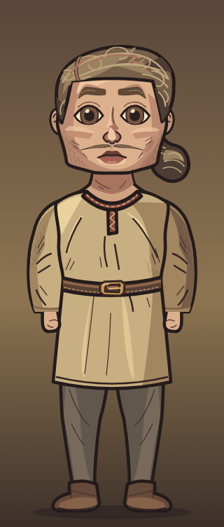
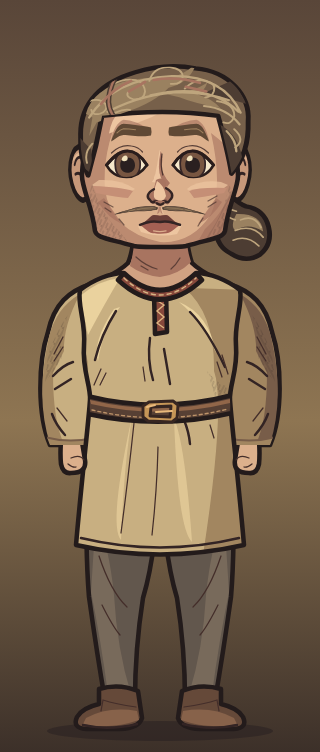

<!doctype html><html lang="ru"><meta charset="utf-8"><meta name="viewport" content="width=device-width,initial-scale=1"><title>Размер ушей</title><style>body{font:16px system-ui;background:#25201b;color:#eee2cd;margin:0 auto;max-width:1280px;padding:1rem}
    a{color:#f4ca91}h1,h2{font:700 1.7rem Georgia,serif}nav ul{columns:3}.grid{display:grid;gap:1rem;
    grid-template-columns:repeat(auto-fit,minmax(230px,1fr))}article{min-width:0;border:1px solid #655343;
    background:#312821;padding:.6rem;border-radius:5px}a img{vertical-align:middle}img{max-width:100%;height:auto}
    .character{display:block;max-height:460px;width:auto;margin:auto}.card{width:32px;height:32px}
    .detail{display:block;width:100%;margin:.35rem 0}.compare{display:flex;align-items:flex-start;gap:.5rem}
    .compare a{flex:1;min-width:0}small{color:#dccab0}code{overflow-wrap:anywhere}@media(max-width:730px){nav ul{columns:1}}</style><main><nav><a href="index.html">Все разделы</a></nav><h1>Размер ушей</h1><div class="grid"><article id="appearance__ear_size__medium"><h3>Средние</h3><code>medium</code><a href="images/7c957989ac3a50a499c6c20b928745fd5316c6e440dc98c2e33ff941506f26c5.png"></a><p><a href="images/00f223682d2d545bb970124991e0a6655e97b66b67d576e33973519845b94e50.png"></a> <small>32 × 32</small></p></article>
<article id="appearance__ear_size__small"><h3>Малые</h3><code>small</code><a href="images/0e0bf58cbf8a834156144610f2af75ae395c76b81a83a7750fd144b8931b2577.png"></a><p><a href="images/9f4a4f49e59c466eea9d6d0214de86dd9393a926bc6adcb2394e6507824666d8.png"></a> <small>32 × 32</small></p></article>
<article id="appearance__ear_size__large"><h3>Крупные</h3><code>large</code><a href="images/3345ccb14b00b0318d1ae78879d3cf82620573ab98a5e5d9519378a2fcbb48f4.png"></a><p><a href="images/d19e84fe8a50fd8c26563e6f68d8d30a0da8946cedc945b058b1524a23fd2d69.png"></a> <small>32 × 32</small></p></article></div></main></html>
